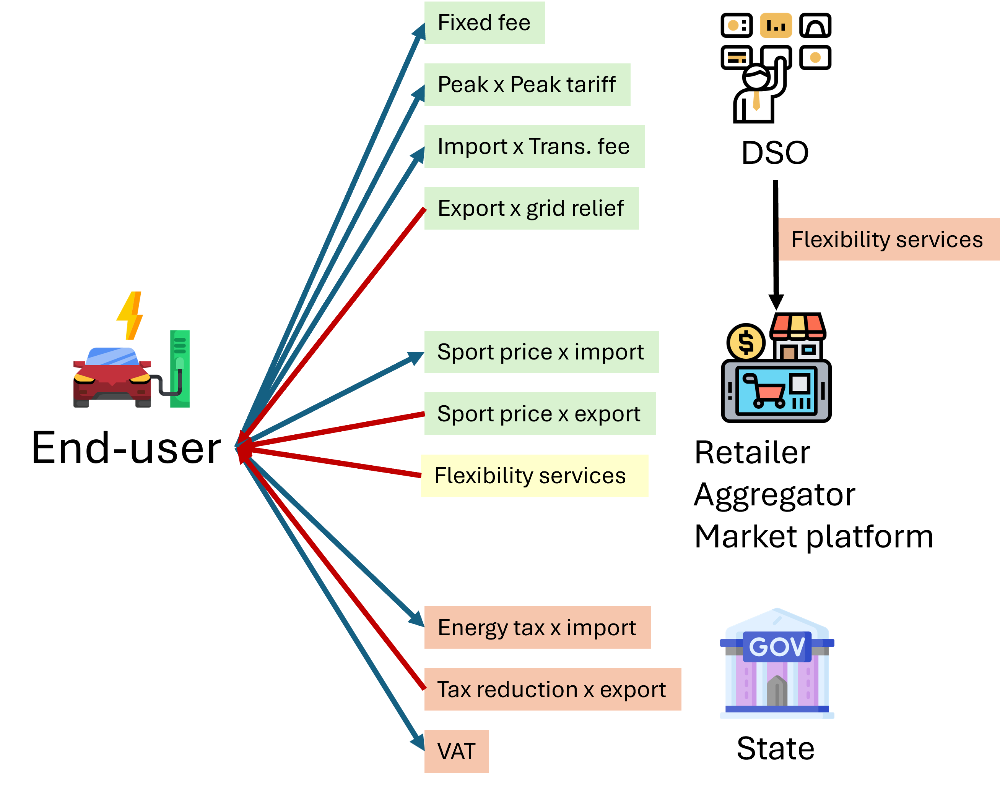

The optimization model is governed by a series of constraints that ensure the solution is physically and economically feasible. These constraints, defined in the create_constraints function, enforce everything from the laws of physics to the operational limits of individual assets.
1. Market and Commercial Constraints
These constraints model the rules for interacting with external markets. And the economic trading is shown in the next figure.

Day-ahead Electricity Market Participation
Participation in the day-ahead electricity market is modeled through constraints ensuring that energy bought or sold doesn’t exceed predefined limits for each time step and retailer.
Electricity bought from the market is enabled if \(\pelemaxmarketbuy_{\eltraderindex} >= 0.0\). The upper bound is defined by («eEleRetMaxBuy»):
\[\velebuy_{\periodindex,\scenarioindex,\timeindex,\eltraderindex} \le \peleretmaxbuy_{\eltraderindex}
\quad \forall \periodindex,\scenarioindex,\timeindex,\eltraderindex\]
The composition of electricity bought from the market is defined by («eEleBuyComposition»):
\[\velebuy_{\periodindex,\scenarioindex,\timeindex,\eltraderindex} =
\sum_{\demandindex \in \nDE, (\eltraderindex,\demandindex) \in \nREDE} \veledemand_{\periodindex,\scenarioindex,\timeindex,\demandindex} +
\sum_{\storageindex \in \nEES, (\eltraderindex,\storageindex) \in \nREGE} \veletotalcharge_{\periodindex,\scenarioindex,\timeindex,\storageindex}
\quad \forall \periodindex,\scenarioindex,\timeindex,\eltraderindex\]
Electricity sold to the market is enabled if \(\pelemaxmarketsell_{\eltraderindex} >= 0.0\). The upper bound is defined by («eEleRetMaxSell»):
\[\velesell_{\periodindex,\scenarioindex,\timeindex,\eltraderindex} \le \peleretmaxsell_{\eltraderindex}
\quad \forall \periodindex,\scenarioindex,\timeindex,\eltraderindex\]
The composition of electricity sold to the market is defined by («eEleSellComposition»):
\[\velesell_{\periodindex,\scenarioindex,\timeindex,\eltraderindex} =
\sum_{\genindex \in \nGENR, (\eltraderindex,\genindex) \in \nREGE} \veletotaloutput_{\periodindex,\scenarioindex,\timeindex,\genindex}
\quad \forall \periodindex,\scenarioindex,\timeindex,\eltraderindex\]
Day-ahead Hydrogen Market Participation
Participation in the day-ahead hydrogen market ensures that the amount of energy bought or sold does not exceed predefined limits for each time step and retailer.
Hydrogen bought from the market («eHydRetMaxBuy») is enabled if \(\phydmaxmarketbuy_{\hydtraderindex} >= 0.0\):
\[\vhydbuy_{\periodindex,\scenarioindex,\timeindex,\hydtraderindex} \le \phydretmaxbuy_{\hydtraderindex}
\quad \forall \periodindex,\scenarioindex,\timeindex,\hydtraderindex\]
The composition of hydrogen bought from the market is defined by («eHydBuyComposition»):
\[\vhydbuy_{\periodindex,\scenarioindex,\timeindex,\hydtraderindex} =
\sum_{\busindex \in \nB, (\busindex,\hydtraderindex) \in \nBH} \vhydimport_{\periodindex,\scenarioindex,\timeindex,\busindex}
\quad \forall \periodindex,\scenarioindex,\timeindex,\hydtraderindex\]
Hydrogen sold to the market («eHydRetMaxSell») is enabled if \(\phydmaxmarketsell_{\hydtraderindex} >= 0.0\):
\[\vhydsell_{\periodindex,\scenarioindex,\timeindex,\hydtraderindex} \le \phydretmaxsell_{\hydtraderindex}
\quad \forall \periodindex,\scenarioindex,\timeindex,\hydtraderindex\]
The composition of hydrogen sold to the market is defined by («eHydSellComposition»):
\[\vhydsell_{\periodindex,\scenarioindex,\timeindex,\hydtraderindex} =
\sum_{\busindex \in \nB, (\busindex,\hydtraderindex) \in \nBH} \vhydexport_{\periodindex,\scenarioindex,\timeindex,\busindex}
\quad \forall \periodindex,\scenarioindex,\timeindex,\hydtraderindex\]
Reserve Electricity Market Participation
Frequency containment reserves in disturbed operation (FCR-D)
FCR-D is modeled through the upward and downward reserve constraints, which ensure that the provision of reserves does not exceed the available capacity of generators and storage units.
The bids for upward and downward reserves are constrained by («eEleFreqContReserveDisUpward», «eEleFreqContReserveDisDownward»):
\[\sum_{\genindex \in \nGET, \pgennofcrd_{\genindex}=0} \velefcrdupbid_{\periodindex,\scenarioindex,\timeindex,\genindex} +
\sum_{\genindex \in \nEES, \pgennofcrd_{\genindex}=0} \velefcrdupbid_{\periodindex,\scenarioindex,\timeindex,\genindex}
\le \pfcrduprequirement_{\periodindex,\scenarioindex,\timeindex}
\quad \forall \periodindex,\scenarioindex,\timeindex\]
\[\sum_{\genindex \in \nGET, \pgennofcrd_{\genindex}=0} \velefcrddwbid_{\periodindex,\scenarioindex,\timeindex,\genindex} +
\sum_{\genindex \in \nEES, \pgennofcrd_{\genindex}=0} \velefcrddwbid_{\periodindex,\scenarioindex,\timeindex,\genindex}
\le \pfcrddwrequirement_{\periodindex,\scenarioindex,\timeindex}
\quad \forall \periodindex,\scenarioindex,\timeindex\]
The relation between bids and FCR-D reserves from an electric generator is defined by («eEleRelationFreqDisUpBid2Gen», «eEleRelationFreqDisDownBid2Gen»):
\[\velefcrdupbid_{\periodindex,\scenarioindex,\timeindex,\genindex} =
\velefcrdupactdi_{\periodindex,\scenarioindex,\timeindex,\genindex}
\quad \forall \periodindex,\scenarioindex,\timeindex,\genindex \in \nGET, \pgennofcrd_{\genindex}=0\]
\[\velefcrddwbid_{\periodindex,\scenarioindex,\timeindex,\genindex} =
\velefcrddwactdi_{\periodindex,\scenarioindex,\timeindex,\genindex}
\quad \forall \periodindex,\scenarioindex,\timeindex,\genindex \in \nGET, \pgennofcrd_{\genindex}=0\]
And for an electric ESS («eEleRelationFreqDisUpBid2Stor», «eEleRelationFreqDisDownBid2Stor»):
\[\velefcrdupbid_{\periodindex,\scenarioindex,\timeindex,\storageindex} =
\velefcrdupactdi_{\periodindex,\scenarioindex,\timeindex,\storageindex} +
\velefcrdupactch_{\periodindex,\scenarioindex,\timeindex,\storageindex}
\quad \forall \periodindex,\scenarioindex,\timeindex,\storageindex \in \nEES, \pgennofcrd_{\storageindex}=0\]
\[\velefcrddwbid_{\periodindex,\scenarioindex,\timeindex,\storageindex} =
\velefcrddwactdi_{\periodindex,\scenarioindex,\timeindex,\storageindex} +
\velefcrddwactch_{\periodindex,\scenarioindex,\timeindex,\storageindex}
\quad \forall \periodindex,\scenarioindex,\timeindex,\storageindex \in \nEES, \pgennofcrd_{\storageindex}=0\]
The tight headroom bounds for FCR-D provision from an electric ESS are defined by («eEleFreqDisUpDischargeHeadroom», «eEleFreqDisUpChargeHeadroom», «eEleFreqDisDownDischargeHeadroom», «eEleFreqDisDownChargeHeadroom»):
\[\velefcrdupactdi_{\periodindex,\scenarioindex,\timeindex,\storageindex} \le
\pelemaxproduction_{\periodindex,\scenarioindex,\timeindex,\storageindex} -
(\velestordischargebin_{\periodindex,\scenarioindex,\timeindex,\storageindex}\peleminproduction_{\periodindex,\scenarioindex,\timeindex,\storageindex} +
\velesecondblockproduction_{\periodindex,\scenarioindex,\timeindex,\storageindex})
\quad \forall \periodindex,\scenarioindex,\timeindex,\storageindex \in \nEES, \pgennofcrd_{\storageindex}=0\]
\[\velefcrdupactch_{\periodindex,\scenarioindex,\timeindex,\storageindex} \le
\velestorchargebin_{\periodindex,\scenarioindex,\timeindex,\storageindex}\peleminconsumption_{\periodindex,\scenarioindex,\timeindex,\storageindex} +
\velesecondblockconsumption_{\periodindex,\scenarioindex,\timeindex,\storageindex}
\quad \forall \periodindex,\scenarioindex,\timeindex,\storageindex \in \nEES, \pgennofcrd_{\storageindex}=0\]
\[\velefcrddwactdi_{\periodindex,\scenarioindex,\timeindex,\storageindex} \le
\velestordischargebin_{\periodindex,\scenarioindex,\timeindex,\storageindex}\peleminproduction_{\periodindex,\scenarioindex,\timeindex,\storageindex} +
\velesecondblockproduction_{\periodindex,\scenarioindex,\timeindex,\storageindex}
\quad \forall \periodindex,\scenarioindex,\timeindex,\storageindex \in \nEES, \pgennofcrd_{\storageindex}=0\]
\[\velefcrddwactch_{\periodindex,\scenarioindex,\timeindex,\storageindex} \le
\pelemaxconsumption_{\periodindex,\scenarioindex,\timeindex,\storageindex} -
(\velestorchargebin_{\periodindex,\scenarioindex,\timeindex,\storageindex}\peleminconsumption_{\periodindex,\scenarioindex,\timeindex,\storageindex} +
\velesecondblockconsumption_{\periodindex,\scenarioindex,\timeindex,\storageindex})
\quad \forall \periodindex,\scenarioindex,\timeindex,\storageindex \in \nEES, \pgennofcrd_{\storageindex}=0\]
Peak Power Calculation
A set of constraints identify the highest power peaks within a billing period for tariff calculations, supporting both ‘Hourly’ and ‘Daily’ tariff types.
Hourly Tariff Constraints
For retailers with ‘Hourly’ tariffs, the following constraints identify the peak consumption hours within each month.
The peak demand value is determined by («eElePeakHourValue»):
\[\vglobalpeak_{\periodindex,\scenarioindex,\monthindex,\eltraderindex,\peakindex} \ge
\velebuy_{\periodindex,\scenarioindex,\timeindex,\eltraderindex} -
\pmaxsell_{\eltraderindex} \sum_{\peakindex' \le \peakindex} \vpeakind_{\periodindex,\scenarioindex,\timeindex,\eltraderindex,\peakindex'}
\quad \forall \periodindex,\scenarioindex,\monthindex,\timeindex,\eltraderindex,\peakindex\]
(Note: Although a night discount between 22:00 and 06:00 is described in the documentation, it is not currently applied in the peak calculation equations below.)
Indicator constraints («eElePeakHourInd_C1», «eElePeakHourInd_C2») link the peak demand variables to binary indicators:
\[\vglobalpeak_{\periodindex,\scenarioindex,\monthindex,\eltraderindex,\peakindex} \ge
\velebuy_{\periodindex,\scenarioindex,\timeindex,\eltraderindex} -
\pmaxsell_{\eltraderindex} (1 - \vpeakind_{\periodindex,\scenarioindex,\timeindex,\eltraderindex,\peakindex})
\quad \forall \periodindex,\scenarioindex,\monthindex,\timeindex,\eltraderindex,\peakindex\]
\[\vglobalpeak_{\periodindex,\scenarioindex,\monthindex,\eltraderindex,\peakindex} \le
\velebuy_{\periodindex,\scenarioindex,\timeindex,\eltraderindex} +
\pmaxsell_{\eltraderindex} (1 - \vpeakind_{\periodindex,\scenarioindex,\timeindex,\eltraderindex,\peakindex})
\quad \forall \periodindex,\scenarioindex,\monthindex,\timeindex,\eltraderindex,\peakindex\]
The number of peak hours selected per month is constrained by («eElePeakNumberMonths»):
\[\sum_{\periodindex,\scenarioindex,\timeindex} \vpeakind_{\periodindex,\scenarioindex,\timeindex,\eltraderindex,\peakindex} = 1
\quad \forall \monthindex,\eltraderindex,\peakindex\]
Daily Tariff Constraints
For retailers with ‘Daily’ tariffs, the constraints first identify the daily peak and then select the highest peaks from those daily values.
The daily peak demand is determined by («eEleDailyPeakValue»):
\[\vdailypeak_{\periodindex,\scenarioindex,\text{doy},\eltraderindex} \ge
\velebuy_{\periodindex,\scenarioindex,\timeindex,\eltraderindex}
\quad \forall \periodindex,\scenarioindex,\text{doy},\timeindex,\eltraderindex\]
Indicator constraints («eEleDailyPeakInd_C1», «eEleDailyPeakInd_C2») and the daily peak selection constraint («eEleDailyPeakNumber») work together to identify the single peak hour for each day.
The global peak is then selected from the daily peaks («eEleGlobalPeakValue»):
\[\vglobalpeak_{\periodindex,\scenarioindex,\monthindex,\eltraderindex,\peakindex} \ge
\vdailypeak_{\periodindex,\scenarioindex,\text{doy},\eltraderindex} -
\pmaxsell_{\eltraderindex} \sum_{\peakindex' \le \peakindex} \vmonthpeakind_{\periodindex,\scenarioindex,\text{doy},\eltraderindex,\peakindex'}
\quad \forall \periodindex,\scenarioindex,\monthindex,\text{doy},\eltraderindex,\peakindex\]
Finally, the number of daily peaks selected per month is constrained by («eElePeakNumberDays»), and the peaks are ordered from highest to lowest by («eEleMonthPeakOrder»).
2. Asset Operational Constraints
These constraints model the physical limitations of generation and storage assets.
Output and Charge Limits
The total output of a committed electricity unit is defined by («eEleTotalOutput»):
\[\begin{aligned}
\frac{\veletotaloutput_{\periodindex,\scenarioindex,\timeindex,\genindex}}{\peleminproduction_{\periodindex,\scenarioindex,\timeindex,\genindex}} =
\velecommitbin_{\periodindex,\scenarioindex,\timeindex,\genindex} +
\frac{\velesecondblockproduction_{\periodindex,\scenarioindex,\timeindex,\genindex} +
\pfcrdact_{\periodindex,\scenarioindex,\timeindex} \velefcrdupactdi_{\periodindex,\scenarioindex,\timeindex,\genindex} -
\pfcrdact_{\periodindex,\scenarioindex,\timeindex} \velefcrddwactdi_{\periodindex,\scenarioindex,\timeindex,\genindex}}
{\peleminproduction_{\periodindex,\scenarioindex,\timeindex,\genindex}}
\quad \forall \periodindex,\scenarioindex,\timeindex,\genindex \in \nGENR
\end{aligned}\]
For electricity storage systems, the formulation is:
\[\begin{aligned}
\frac{\veletotaloutput_{\periodindex,\scenarioindex,\timeindex,\storageindex}}{\peleminproduction_{\periodindex,\scenarioindex,\timeindex,\storageindex}} =
\velestordischargebin_{\periodindex,\scenarioindex,\timeindex,\storageindex} +
\frac{\velesecondblockproduction_{\periodindex,\scenarioindex,\timeindex,\storageindex} +
\pfcrdupreqactivation_{\periodindex,\scenarioindex,\timeindex} \velefcrdupactdi_{\periodindex,\scenarioindex,\timeindex,\storageindex} -
\pfcrddwreqactivation_{\periodindex,\scenarioindex,\timeindex} \velefcrddwactdi_{\periodindex,\scenarioindex,\timeindex,\storageindex}}
{\peleminproduction_{\periodindex,\scenarioindex,\timeindex,\storageindex}}
\quad \forall \periodindex,\scenarioindex,\timeindex,\storageindex \in \nEES
\end{aligned}\]
The total output of a hydrogen unit is defined by («eHydTotalOutput»):
\[\frac{\vhydtotaloutput_{\periodindex,\scenarioindex,\timeindex,\genindex}}{\phydminproduction_{\periodindex,\scenarioindex,\timeindex,\genindex}} =
\vhydcommitbin_{\periodindex,\scenarioindex,\timeindex,\genindex} +
\frac{\vhydsecondblockproduction_{\periodindex,\scenarioindex,\timeindex,\genindex}}{\phydminproduction_{\periodindex,\scenarioindex,\timeindex,\genindex}}
\quad \forall \periodindex,\scenarioindex,\timeindex,\genindex \in \nHGT\]
The total charge of an electricity storage system is defined by («eEleTotalCharge»):
\[\begin{aligned}
\frac{\veletotalcharge_{\periodindex,\scenarioindex,\timeindex,\storageindex}}{\peleminconsumption_{\periodindex,\scenarioindex,\timeindex,\storageindex}} =
\velestorchargebin_{\periodindex,\scenarioindex,\timeindex,\storageindex} +
\frac{\velesecondblockconsumption_{\periodindex,\scenarioindex,\timeindex,\storageindex} -
\pfcrdupreqactivation_{\periodindex,\scenarioindex,\timeindex} \velefcrdupactch_{\periodindex,\scenarioindex,\timeindex,\storageindex} +
\pfcrddwreqactivation_{\periodindex,\scenarioindex,\timeindex} \velefcrddwactch_{\periodindex,\scenarioindex,\timeindex,\storageindex}}
{\peleminconsumption_{\periodindex,\scenarioindex,\timeindex,\storageindex}}
\quad \forall \periodindex,\scenarioindex,\timeindex,\storageindex \in \nEES
\end{aligned}\]
The total charge of a hydrogen unit is defined by («eHydTotalCharge»):
\[\frac{\vhydtotalcharge_{\periodindex,\scenarioindex,\timeindex,\storageindex}}{\phydminconsumption_{\periodindex,\scenarioindex,\timeindex,\storageindex}} =
\vhydstorchargebin_{\periodindex,\scenarioindex,\timeindex,\storageindex} +
\frac{\vhydsecondblockconsumption_{\periodindex,\scenarioindex,\timeindex,\storageindex}}{\phydminconsumption_{\periodindex,\scenarioindex,\timeindex,\storageindex}}
\quad \forall \periodindex,\scenarioindex,\timeindex,\storageindex \in \nHGS\]
The maximum and minimum charge of the second block for an electrolyzer is constrained by («eE2HMaxCharge2ndBlock», «eE2HMinCharge2ndBlock»):
\[\vhydcommitbin_{\periodindex,\scenarioindex,\timeindex,\genindex} \cdot \phydmaxchargesecondblock_{\periodindex,\scenarioindex,\timeindex,\genindex}
\geq \velesecondblockconsumption_{\periodindex,\scenarioindex,\timeindex,\genindex}
\geq \vhydcommitbin_{\periodindex,\scenarioindex,\timeindex,\genindex} \cdot \phydminchargesecondblock_{\periodindex,\scenarioindex,\timeindex,\genindex}
\quad \forall \periodindex,\scenarioindex,\timeindex,\genindex \in \nGHE\]
Ramping Limits
A series of constraints limit how quickly the output or charging rate of an asset can change. For example, eEleMaxRampUpOutput restricts the increase in a generator’s output between consecutive timesteps.
Maximum ramp-up and ramp-down for a non-renewable electricity unit («eEleMaxRampUpOutput», «eEleMaxRampDwOutput»):
* P. Damcı-Kurt, S. Küçükyavuz, D. Rajan, and A. Atamtürk, “A polyhedral study of production ramping,” Math. Program., vol. 158, no. 1–2, pp. 175–205, Jul. 2016. 10.1007/s10107-015-0919-9
\[\frac{-\velesecondblockproduction_{\periodindex,\scenarioindex,\timeindex-\ptimestep,\genindex} - \velefcrddwactdi_{\periodindex,\scenarioindex,\timeindex-\ptimestep,\genindex} + \velesecondblockproduction_{\periodindex,\scenarioindex,\timeindex,\genindex} + \velefcrdupactdi_{\periodindex,\scenarioindex,\timeindex,\genindex}}{\ptimestepduration_{\periodindex,\scenarioindex,\timeindex} \prampuprate_{\genindex}}
\le \velecommitbin_{\periodindex,\scenarioindex,\timeindex,\genindex} - \velestartupbin_{\periodindex,\scenarioindex,\timeindex,\genindex}
\quad \forall \periodindex,\scenarioindex,\timeindex,\genindex \in \nGET\]
\[\frac{-\velesecondblockproduction_{\periodindex,\scenarioindex,\timeindex-\ptimestep,\genindex} + \velefcrdupactdi_{\periodindex,\scenarioindex,\timeindex-\ptimestep,\genindex} + \velesecondblockproduction_{\periodindex,\scenarioindex,\timeindex,\genindex} - \velefcrddwactdi_{\periodindex,\scenarioindex,\timeindex,\genindex}}{\ptimestepduration_{\periodindex,\scenarioindex,\timeindex} \prampdwrate_{\genindex}}
\ge -\velecommitbin_{\periodindex,\scenarioindex,\timeindex-\ptimestep,\genindex} + \vshutdownbin_{\periodindex,\scenarioindex,\timeindex,\genindex}
\quad \forall \periodindex,\scenarioindex,\timeindex,\genindex \in \nGET\]
Maximum ramp-up and ramp-down for discharging an electricity ESS («eEleMaxRampUpDischarge», «eEleMaxRampDwDischarge»):
\[\frac{-\velesecondblockproduction_{\periodindex,\scenarioindex,\timeindex-\ptimestep,\storageindex} - \velefcrddwactdi_{\periodindex,\scenarioindex,\timeindex-\ptimestep,\storageindex} + \velesecondblockproduction_{\periodindex,\scenarioindex,\timeindex,\storageindex} + \velefcrdupactdi_{\periodindex,\scenarioindex,\timeindex,\storageindex}}{\ptimestepduration_{\periodindex,\scenarioindex,\timeindex} \prampuprate_{\storageindex}}
\le 1
\quad \forall \periodindex,\scenarioindex,\timeindex,\storageindex \in \nEES\]
\[\frac{-\velesecondblockproduction_{\periodindex,\scenarioindex,\timeindex-\ptimestep,\storageindex} - \velefcrdupactdi_{\periodindex,\scenarioindex,\timeindex-\ptimestep,\storageindex} + \velesecondblockproduction_{\periodindex,\scenarioindex,\timeindex,\storageindex} + \velefcrddwactdi_{\periodindex,\scenarioindex,\timeindex,\storageindex}}{\ptimestepduration_{\periodindex,\scenarioindex,\timeindex} \prampdwrate_{\storageindex}}
\ge -1
\quad \forall \periodindex,\scenarioindex,\timeindex,\storageindex \in \nEES\]
Maximum ramp-up and ramp-down for a hydrogen unit («eHydMaxRampUpOutput», «eHydMaxRampDwOutput»):
\[\frac{-\vhydsecondblockproduction_{\periodindex,\scenarioindex,\timeindex-\ptimestep,\genindex} + \vhydsecondblockproduction_{\periodindex,\scenarioindex,\timeindex,\genindex}}{\ptimestepduration_{\periodindex,\scenarioindex,\timeindex} \prampuprate_{\genindex}}
\le \vhydcommitbin_{\periodindex,\scenarioindex,\timeindex,\genindex} - \vhydstartupbin_{\periodindex,\scenarioindex,\timeindex,\genindex}
\quad \forall \periodindex,\scenarioindex,\timeindex,\genindex \in \nHGT\]
\[\frac{-\vhydsecondblockproduction_{\periodindex,\scenarioindex,\timeindex-\ptimestep,\genindex} + \vhydsecondblockproduction_{\periodindex,\scenarioindex,\timeindex,\genindex}}{\ptimestepduration_{\periodindex,\scenarioindex,\timeindex} \prampdwrate_{\genindex}}
\ge -\vhydcommitbin_{\periodindex,\scenarioindex,\timeindex-\ptimestep,\genindex} + \vhydshutdownbin_{\periodindex,\scenarioindex,\timeindex,\genindex}
\quad \forall \periodindex,\scenarioindex,\timeindex,\genindex \in \nHGT\]
Unit Commitment Logic
For dispatchable assets, these constraints model the on/off decisions.
Logical relation between commitment, startup, and shutdown status of an electricity unit («eEleCommitmentStartupShutdown»):
\[\velecommitbin_{\periodindex,\scenarioindex,\timeindex,\genindex} - \velecommitbin_{\periodindex,\scenarioindex,\timeindex-\ptimestep,\genindex}
= \velestartupbin_{\periodindex,\scenarioindex,\timeindex,\genindex} - \veleshutdownbin_{\periodindex,\scenarioindex,\timeindex,\genindex}
\quad \forall \periodindex,\scenarioindex,\timeindex,\genindex \in \nGET\]
Logical relation for a hydrogen unit («eHydCommitmentStartupShutdown»):
\[\vhydcommitbin_{\periodindex,\scenarioindex,\timeindex,\genindex} - \vhydcommitbin_{\periodindex,\scenarioindex,\timeindex-\ptimestep,\genindex}
= \vhydstartupbin_{\periodindex,\scenarioindex,\timeindex,\genindex} - \vhydshutdownbin_{\periodindex,\scenarioindex,\timeindex,\genindex}
\quad \forall \periodindex,\scenarioindex,\timeindex,\genindex \in \nHGT\]
Minimum up-time and down-time of a thermal unit («eEleMinUpTime», «eEleMinDownTime»):
- D. Rajan and S. Takriti, “Minimum up/down polytopes of the unit commitment problem with start-up costs,” IBM, New York, Technical Report RC23628, 2005. https://pdfs.semanticscholar.org/b886/42e36b414d5929fed48593d0ac46ae3e2070.pdf
\[\sum_{\timeindex'=\timeindex-\puptime_{\genindex}+1}^{\timeindex} \velestartupbin_{\periodindex,\scenarioindex,\timeindex',\genindex}
\le \velecommitbin_{\periodindex,\scenarioindex,\timeindex,\genindex}
\quad \forall \periodindex,\scenarioindex,\timeindex,\genindex \in \nGET\]
\[\sum_{\timeindex'=\timeindex-\pdwtime_{\genindex}+1}^{\timeindex} \veleshutdownbin_{\periodindex,\scenarioindex,\timeindex',\genindex}
\le 1 - \velecommitbin_{\periodindex,\scenarioindex,\timeindex,\genindex}
\quad \forall \periodindex,\scenarioindex,\timeindex,\genindex \in \nGET\]
Minimum up-time and down-time for a hydrogen unit («eHydMinUpTime», «eHydMinDownTime»):
\[\sum_{\timeindex'=\timeindex-\puptime_{\genindex}+1}^{\timeindex} \vhydstartupbin_{\periodindex,\scenarioindex,\timeindex',\genindex}
\le \vhydcommitbin_{\periodindex,\scenarioindex,\timeindex,\genindex}
\quad \forall \periodindex,\scenarioindex,\timeindex,\genindex \in \nHGT\]
\[\sum_{\timeindex'=\timeindex-\pdwtime_{\genindex}+1}^{\timeindex} \vhydshutdownbin_{\periodindex,\scenarioindex,\timeindex',\genindex}
\le 1 - \vhydcommitbin_{\periodindex,\scenarioindex,\timeindex,\genindex}
\quad \forall \periodindex,\scenarioindex,\timeindex,\genindex \in \nHGT\]
Second Block Constraints
These constraints define the operational limits for the second block of generation and storage units, including reserve provision.
Maximum and minimum electricity generation of the second block for a committed unit («eEleMaxOutput2ndBlock», «eEleMinOutput2ndBlock»):
* D.A. Tejada-Arango, S. Lumbreras, P. Sánchez-Martín, and A. Ramos “Which Unit-Commitment Formulation is Best? A Systematic Comparison” IEEE Transactions on Power Systems 35 (4):2926-2936 Jul 2020 10.1109/TPWRS.2019.2962024
* C. Gentile, G. Morales-España, and A. Ramos “A tight MIP formulation of the unit commitment problem with start-up and shut-down constraints” EURO Journal on Computational Optimization 5 (1), 177-201 Mar 2017. 10.1007/s13675-016-0066-y
* G. Morales-España, A. Ramos, and J. Garcia-Gonzalez “An MIP Formulation for Joint Market-Clearing of Energy and Reserves Based on Ramp Scheduling” IEEE Transactions on Power Systems 29 (1): 476-488, Jan 2014. 10.1109/TPWRS.2013.2259601
* G. Morales-España, J.M. Latorre, and A. Ramos “Tight and Compact MILP Formulation for the Thermal Unit Commitment Problem” IEEE Transactions on Power Systems 28 (4): 4897-4908, Nov 2013. 10.1109/TPWRS.2013.2251373
\[\frac{\velesecondblockproduction_{\periodindex,\scenarioindex,\timeindex,\genindex} + \velefcrdupactdi_{\periodindex,\scenarioindex,\timeindex,\genindex}}{\pelemaxprodsecondblock_{\periodindex,\scenarioindex,\timeindex,\genindex}}
\le \velecommitbin_{\periodindex,\scenarioindex,\timeindex,\genindex} - \velestartupbin_{\periodindex,\scenarioindex,\timeindex,\genindex} - \veleshutdownbin_{\periodindex,\scenarioindex,\timeindex+1,\genindex}
\quad \forall \periodindex,\scenarioindex,\timeindex,\genindex \in \nGET\]
\[\velesecondblockproduction_{\periodindex,\scenarioindex,\timeindex,\genindex} - \velefcrddwactdi_{\periodindex,\scenarioindex,\timeindex,\genindex} \ge 0
\quad \forall \periodindex,\scenarioindex,\timeindex,\genindex \in \nGET\]
Maximum and minimum electricity generation of the second block for an electricity ESS («eEleMaxESSOutput2ndBlock», «eEleMinESSOutput2ndBlock»):
\[\frac{\velesecondblockproduction_{\periodindex,\scenarioindex,\timeindex,\storageindex} + \velefcrdupactdi_{\periodindex,\scenarioindex,\timeindex,\storageindex}}{\pelemaxprodsecondblock_{\periodindex,\scenarioindex,\timeindex,\storageindex}}
\le \velestordischargebin_{\periodindex,\scenarioindex,\timeindex,\storageindex}
\quad \forall \periodindex,\scenarioindex,\timeindex,\storageindex \in \nEES\]
\[\velesecondblockproduction_{\periodindex,\scenarioindex,\timeindex,\storageindex} - \velefcrddwactdi_{\periodindex,\scenarioindex,\timeindex,\storageindex} \ge 0
\quad \forall \periodindex,\scenarioindex,\timeindex,\storageindex \in \nEES\]
Maximum and minimum hydrogen generation of the second block («eHydMaxOutput2ndBlock», «eMinHydOutput2ndBlock»):
\[\frac{\vhydsecondblockproduction_{\periodindex,\scenarioindex,\timeindex,\genindex}}{\phydmaxprodsecondblock_{\periodindex,\scenarioindex,\timeindex,\genindex}}
\le \vhydcommitbin_{\periodindex,\scenarioindex,\timeindex,\genindex} - \vhydstartupbin_{\periodindex,\scenarioindex,\timeindex,\genindex} - \vhydshutdownbin_{\periodindex,\scenarioindex,\timeindex+1,\genindex}
\quad \forall \periodindex,\scenarioindex,\timeindex,\genindex \in \nHGT\]
\[\vhydsecondblockproduction_{\periodindex,\scenarioindex,\timeindex,\genindex} \ge 0
\quad \forall \periodindex,\scenarioindex,\timeindex,\genindex \in \nHGT\]
3. Energy Storage Dynamics
These constraints specifically model the behavior of energy storage systems.
Inventory Balance (State-of-Charge)
The core state-of-charge (SoC) balancing equation, eEleInventory for electricity and eHydInventory for hydrogen, tracks the stored energy level over time.
State-of-Charge balance for electricity storage systems:
\[\begin{split}\begin{aligned}
&\veleinventory_{\periodindex,\scenarioindex,\timeindex-\pcycletimestep_{\storageindex},\storageindex} +
\sum_{\timeindex'=\timeindex-\pcycletimestep_{\storageindex}+1}^{\timeindex}
\ptimestepduration_{\periodindex,\scenarioindex,\timeindex'}
(\veleenergyinflow_{\periodindex,\scenarioindex,\timeindex',\storageindex} -
\veleenergyoutflow_{\periodindex,\scenarioindex,\timeindex',\storageindex} - \\
&\frac{\veletotaloutput_{\periodindex,\scenarioindex,\timeindex',\storageindex}}{\pdischeff_{\storageindex}} +
\pcheff_{\storageindex} \veletotalcharge_{\periodindex,\scenarioindex,\timeindex',\storageindex})
= \veleinventory_{\periodindex,\scenarioindex,\timeindex,\storageindex} +
\velespillage_{\periodindex,\scenarioindex,\timeindex,\storageindex}
\quad \forall \periodindex,\scenarioindex,\timeindex,\storageindex \in \nEES
\end{aligned}\end{split}\]
State-of-Charge balance for hydrogen storage systems:
\[\begin{split}\begin{aligned}
&\vhydinventory_{\periodindex,\scenarioindex,\timeindex-\pcycletimestep_{\storageindex},\storageindex} +
\sum_{\timeindex'=\timeindex-\pcycletimestep_{\storageindex}+1}^{\timeindex}
\ptimestepduration_{\periodindex,\scenarioindex,\timeindex'}
(\vhydenergyinflow_{\periodindex,\scenarioindex,\timeindex',\storageindex} -
\vhydenergyoutflow_{\periodindex,\scenarioindex,\timeindex',\storageindex} - \\
&\vhydtotaloutput_{\periodindex,\scenarioindex,\timeindex',\storageindex} +
\peff_{\storageindex} \vhydtotalcharge_{\periodindex,\scenarioindex,\timeindex',\storageindex})
= \vhydinventory_{\periodindex,\scenarioindex,\timeindex,\storageindex} +
\vhydspillage_{\periodindex,\scenarioindex,\timeindex,\storageindex}
\quad \forall \periodindex,\scenarioindex,\timeindex,\storageindex \in \nHGS
\end{aligned}\end{split}\]
Charge/Discharge Incompatibility
The constraints prevent a storage unit from charging and discharging in the same timestep, using binary variables.
Electricity Storage Incompatibility («eEleChargingDecision», «eEleDischargingDecision», «eEleStorageMode»):
\[\frac{\veletotalcharge_{\periodindex,\scenarioindex,\timeindex,\storageindex}}{\pelemaxconsumption_{\periodindex,\scenarioindex,\timeindex,\storageindex}}
\le \velestorchargebin_{\periodindex,\scenarioindex,\timeindex,\storageindex}
\quad \forall \periodindex,\scenarioindex,\timeindex,\storageindex \in \nEES\]
\[\frac{\veletotaloutput_{\periodindex,\scenarioindex,\timeindex,\storageindex}}{\pelemaxproduction_{\periodindex,\scenarioindex,\timeindex,\storageindex}}
\le \velestordischargebin_{\periodindex,\scenarioindex,\timeindex,\storageindex}
\quad \forall \periodindex,\scenarioindex,\timeindex,\storageindex \in \nEES\]
\[\velestorchargebin_{\periodindex,\scenarioindex,\timeindex,\storageindex} +
\velestordischargebin_{\periodindex,\scenarioindex,\timeindex,\storageindex}
\le \pfixavail_{\periodindex,\scenarioindex,\timeindex,\storageindex}
\quad \forall \periodindex,\scenarioindex,\timeindex,\storageindex \in \nEES\]
Hydrogen Storage Incompatibility («eHydChargingDecision», «eHydDischargingDecision», «eHydStorageMode»):
\[\frac{\vhydtotalcharge_{\periodindex,\scenarioindex,\timeindex,\storageindex}}{\phydmaxconsumption_{\periodindex,\scenarioindex,\timeindex,\storageindex}}
\le \vhydstorchargebin_{\periodindex,\scenarioindex,\timeindex,\storageindex}
\quad \forall \periodindex,\scenarioindex,\timeindex,\storageindex \in \nHGS\]
\[\frac{\vhydtotaloutput_{\periodindex,\scenarioindex,\timeindex,\storageindex}}{\phydmaxproduction_{\periodindex,\scenarioindex,\timeindex,\storageindex}}
\le \vhydstordischargebin_{\periodindex,\scenarioindex,\timeindex,\storageindex}
\quad \forall \periodindex,\scenarioindex,\timeindex,\storageindex \in \nHGS\]
\[\vhydstorchargebin_{\periodindex,\scenarioindex,\timeindex,\storageindex} +
\vhydstordischargebin_{\periodindex,\scenarioindex,\timeindex,\storageindex}
\le \pfixavail_{\periodindex,\scenarioindex,\timeindex,\storageindex}
\quad \forall \periodindex,\scenarioindex,\timeindex,\storageindex \in \nHGS\]
Depth of Discharge (DoD) Constraints
These constraints model the degradation of electricity storage systems based on their Depth of Discharge (DoD).
The minimum and maximum inventory levels for each day are tracked by («eEleInventoryMinDay», «eEleInventoryMaxDay»):
\[\veleinvminday_{\periodindex,\scenarioindex,\text{doy},\storageindex} \le
\veleinventory_{\periodindex,\scenarioindex,\timeindex,\storageindex}
\quad \forall \periodindex,\scenarioindex,\text{doy},\timeindex,\storageindex \in \nEES\]
\[\veleinvmaxday_{\periodindex,\scenarioindex,\text{doy},\storageindex} \ge
\veleinventory_{\periodindex,\scenarioindex,\timeindex,\storageindex}
\quad \forall \periodindex,\scenarioindex,\text{doy},\timeindex,\storageindex \in \nEES\]
The daily DoD is calculated as the difference between the maximum and minimum inventory levels («eEleInventoryDoD»):
\[\veleinvdoday_{\periodindex,\scenarioindex,\text{doy},\storageindex} =
\veleinvmaxday_{\periodindex,\scenarioindex,\text{doy},\storageindex} -
\veleinvminday_{\periodindex,\scenarioindex,\text{doy},\storageindex}
\quad \forall \periodindex,\scenarioindex,\text{doy},\storageindex \in \nEES\]
The total DoD is divided into three segments to model non-linear degradation costs («eEleInventoryDoDSegments»):
\[\veleinvdoday_{\periodindex,\scenarioindex,\text{doy},\storageindex} =
\veleinvdodsaday_{\periodindex,\scenarioindex,\text{doy},\storageindex} +
\veleinvdodsbday_{\periodindex,\scenarioindex,\text{doy},\storageindex} +
\veleinvdodscday_{\periodindex,\scenarioindex,\text{doy},\storageindex}
\quad \forall \periodindex,\scenarioindex,\text{doy},\storageindex \in \nEES\]
Upper bounds for each DoD segment are defined by («eEleInventoryDoDS1Upper», «eEleInventoryDoDS2Upper», «eEleInventoryDoDS3Upper»):
\[\veleinvdodsaday_{\periodindex,\scenarioindex,\text{doy},\storageindex} \le
\pdodsa_{\storageindex} \pmaxstorage_{\storageindex}
\quad \forall \periodindex,\scenarioindex,\text{doy},\storageindex \in \nEES\]
\[\veleinvdodsbday_{\periodindex,\scenarioindex,\text{doy},\storageindex} \le
\pdodsb_{\storageindex} \pmaxstorage_{\storageindex}
\quad \forall \periodindex,\scenarioindex,\text{doy},\storageindex \in \nEES\]
\[\veleinvdodscday_{\periodindex,\scenarioindex,\text{doy},\storageindex} \le
\pdodsc_{\storageindex} \pmaxstorage_{\storageindex}
\quad \forall \periodindex,\scenarioindex,\text{doy},\storageindex \in \nEES\]
Energy Inflows and Outflows
Energy inflows and outflows are constrained by the ESS commitment decision and physical limits.
Maximum and minimum electricity inflows («eEleMaxInflows2Commitment», «eEleMinInflows2Commitment»):
\[\frac{\veleenergyinflow_{\periodindex,\scenarioindex,\timeindex,\storageindex}}{\pelemaxinflow_{\periodindex,\scenarioindex,\timeindex,\storageindex}} \le 1
\quad \forall \periodindex,\scenarioindex,\timeindex,\storageindex \in \nEES\]
\[\frac{\veleenergyinflow_{\periodindex,\scenarioindex,\timeindex,\storageindex}}{\pelemininflow_{\periodindex,\scenarioindex,\timeindex,\storageindex}} \ge 1
\quad \forall \periodindex,\scenarioindex,\timeindex,\storageindex \in \nEES\]
Maximum and minimum electricity outflows («eEleMaxOutflows2Commitment», «eEleMinOutflows2Commitment»):
\[\frac{\veleenergyoutflow_{\periodindex,\scenarioindex,\timeindex,\storageindex}}{\pelemaxoutflow_{\periodindex,\scenarioindex,\timeindex,\storageindex}} \le 1
\quad \forall \periodindex,\scenarioindex,\timeindex,\storageindex \in \nEES\]
\[\frac{\veleenergyoutflow_{\periodindex,\scenarioindex,\timeindex,\storageindex}}{\peleminoutflow_{\periodindex,\scenarioindex,\timeindex,\storageindex}} \ge 1
\quad \forall \periodindex,\scenarioindex,\timeindex,\storageindex \in \nEES\]
Similar constraints apply to hydrogen storage systems («eHydMaxInflows2Commitment», «eHydMinInflows2Commitment», «eHydMaxOutflows2Commitment», «eHydMinOutflows2Commitment»).
ESS electricity outflows over a cycle are constrained by («eEleMaxEnergyOutflows», «eEleMinEnergyOutflows»):
\[\sum_{\timeindex'=\timeindex-\poutflowtimestep_{\storageindex}+1}^{\timeindex}
(\veleenergyoutflow_{\periodindex,\scenarioindex,\timeindex',\storageindex} - \pelemaxoutflow_{\periodindex,\scenarioindex,\timeindex',\storageindex}) \le 0
\quad \forall \periodindex,\scenarioindex,\timeindex,\storageindex \in \nEES\]
\[\sum_{\timeindex'=\timeindex-\poutflowtimestep_{\storageindex}+1}^{\timeindex}
(\veleenergyoutflow_{\periodindex,\scenarioindex,\timeindex',\storageindex} - \peleminoutflow_{\periodindex,\scenarioindex,\timeindex',\storageindex}) \ge 0
\quad \forall \periodindex,\scenarioindex,\timeindex,\storageindex \in \nEES\]
Incompatibility between charge and outflows for an electricity ESS is defined by («eIncompatibilityEleChargeOutflows»):
\[\frac{\veleenergyoutflow_{\periodindex,\scenarioindex,\timeindex,\storageindex} + \velesecondblockconsumption_{\periodindex,\scenarioindex,\timeindex,\storageindex}}{\pelemaxcharge_{\periodindex,\scenarioindex,\timeindex,\storageindex}} \le 1
\quad \forall \periodindex,\scenarioindex,\timeindex,\storageindex \in \nEES\]
Operation Ramping Constraints
These constraints limit the rate of change in charging and discharging power for ESS.
Maximum ramp-up and ramp-down for charging an electricity ESS («eEleMaxRampUpCharge», «eEleMaxRampDwCharge»):
\[\frac{-\velesecondblockconsumption_{\periodindex,\scenarioindex,\timeindex-\ptimestep,\storageindex} + \velefcrddwactch_{\periodindex,\scenarioindex,\timeindex-\ptimestep,\storageindex} + \velesecondblockconsumption_{\periodindex,\scenarioindex,\timeindex,\storageindex} - \velefcrdupactch_{\periodindex,\scenarioindex,\timeindex,\storageindex}}{\ptimestepduration_{\periodindex,\scenarioindex,\timeindex} \prampuprate_{\storageindex}}
\ge -1
\quad \forall \periodindex,\scenarioindex,\timeindex,\storageindex \in \nEES\]
\[\frac{-\velesecondblockconsumption_{\periodindex,\scenarioindex,\timeindex-\ptimestep,\storageindex} - \velefcrdupactch_{\periodindex,\scenarioindex,\timeindex-\ptimestep,\storageindex} + \velesecondblockconsumption_{\periodindex,\scenarioindex,\timeindex,\storageindex} + \velefcrddwactch_{\periodindex,\scenarioindex,\timeindex,\storageindex}}{\ptimestepduration_{\periodindex,\scenarioindex,\timeindex} \prampdwrate_{\storageindex}}
\le 1
\quad \forall \periodindex,\scenarioindex,\timeindex,\storageindex \in \nEES\]
Similar ramping constraints apply to hydrogen storage systems for both charging and outflows.
Second Block and Reserve Constraints
These constraints define the operational limits for the second block of ESS, including reserve provision.
Maximum and minimum charge of the second block for an electricity ESS («eEleMaxESSCharge2ndBlock», «eEleMinESSCharge2ndBlock»):
\[\frac{\velesecondblockconsumption_{\periodindex,\scenarioindex,\timeindex,\storageindex} + \velefcrddwactch_{\periodindex,\scenarioindex,\timeindex,\storageindex}}{\pelemaxchargesecondblock_{\periodindex,\scenarioindex,\timeindex,\storageindex}}
\le \velestorchargebin_{\periodindex,\scenarioindex,\timeindex,\storageindex}
\quad \forall \periodindex,\scenarioindex,\timeindex,\storageindex \in \nEES\]
\[\frac{\velesecondblockconsumption_{\periodindex,\scenarioindex,\timeindex,\storageindex} - \velefcrdupactch_{\periodindex,\scenarioindex,\timeindex,\storageindex}}{\pelemaxchargesecondblock_{\periodindex,\scenarioindex,\timeindex,\storageindex}}
\ge 0
\quad \forall \periodindex,\scenarioindex,\timeindex,\storageindex \in \nEES\]
Reserve provision from an ESS is constrained by charging and discharging status («eEleFreqDisUpChargeBound», «eEleFreqDisUpDischargeBound», etc.):
\[\frac{\velefcrdupactch_{\periodindex,\scenarioindex,\timeindex,\storageindex}}{\pelemaxconsumption_{\periodindex,\scenarioindex,\timeindex,\storageindex}}
\le \velestorchargebin_{\periodindex,\scenarioindex,\timeindex,\storageindex}
\quad \forall \periodindex,\scenarioindex,\timeindex,\storageindex \in \nEES\]
\[\frac{\velefcrdupactdi_{\periodindex,\scenarioindex,\timeindex,\storageindex}}{\pelemaxproduction_{\periodindex,\scenarioindex,\timeindex,\storageindex}}
\le \velestordischargebin_{\periodindex,\scenarioindex,\timeindex,\storageindex}
\quad \forall \periodindex,\scenarioindex,\timeindex,\storageindex \in \nEES\]
8. Bounds on Variables
To ensure numerical stability and solver efficiency, bounds are placed on key decision variables. For example, the state-of-charge variables for storage units are bounded between zero and their maximum capacity.
\[0 \leq \veleproduction_{\periodindex,\scenarioindex,\timeindex,\genindex} \leq \pelemaxproduction_{\periodindex,\scenarioindex,\timeindex,\genindex}
\quad \forall \periodindex,\scenarioindex,\timeindex,\genindex|\genindex \in \nGE\]
\[0 \leq \vhydproduction_{\periodindex,\scenarioindex,\timeindex,\genindex} \leq \phydmaxproduction_{\periodindex,\scenarioindex,\timeindex,\genindex}
\quad \forall \periodindex,\scenarioindex,\timeindex,\genindex|\genindex \in \nGH\]
\[0 \leq \veleconsumption_{\periodindex,\scenarioindex,\timeindex,\storageindex} \leq \pelemaxconsumption_{\periodindex,\scenarioindex,\timeindex,\storageindex}
\quad \forall \periodindex,\scenarioindex,\timeindex,\storageindex|\storageindex \in \nEE\]
\[0 \leq \veleconsumption_{\periodindex,\scenarioindex,\timeindex,\genindex} \leq \pelemaxconsumption_{\periodindex,\scenarioindex,\timeindex,\genindex}
\quad \forall \periodindex,\scenarioindex,\timeindex,\genindex|\genindex \in \nGHE\]
\[0 \leq \vhydconsumption_{\periodindex,\scenarioindex,\timeindex,\storageindex} \leq \phydmaxconsumption_{\periodindex,\scenarioindex,\timeindex,\storageindex}
\quad \forall \periodindex,\scenarioindex,\timeindex,\storageindex|\storageindex \in \nEH\]
\[0 \leq \vhydconsumption_{\periodindex,\scenarioindex,\timeindex,\genindex} \leq \phydmaxconsumption_{\periodindex,\scenarioindex,\timeindex,\genindex}
\quad \forall \periodindex,\scenarioindex,\timeindex,\genindex|\genindex \in \nGHE\]
\[0 \leq \velesecondblockproduction_{\periodindex,\scenarioindex,\timeindex,\genindex} \leq \pelemaxproduction_{\periodindex,\scenarioindex,\timeindex,\genindex} \!-\! \peleminproduction_{\periodindex,\scenarioindex,\timeindex,\genindex}
\quad \forall \periodindex,\scenarioindex,\timeindex,\genindex|\genindex \in \nGENR\]
\[0 \leq \vhydsecondblockproduction_{\periodindex,\scenarioindex,\timeindex,\genindex} \leq \phydmaxproduction_{\periodindex,\scenarioindex,\timeindex,\genindex} \!-\! \phydminproduction_{\periodindex,\scenarioindex,\timeindex,\genindex}
\quad \forall \periodindex,\scenarioindex,\timeindex,\genindex|\genindex \in \nGHE\]
\[0 \leq \veleenergyoutflow_{\periodindex,\scenarioindex,\timeindex,\storageindex} \leq \pelemaxoutflow_{\periodindex,\scenarioindex,\timeindex,\storageindex}
\quad \forall \periodindex,\scenarioindex,\timeindex,\storageindex|\storageindex \in \nEE\]
\[0 \leq \vhydenergyoutflow_{\periodindex,\scenarioindex,\timeindex,\storageindex} \leq \phydmaxoutflow_{\periodindex,\scenarioindex,\timeindex,\storageindex}
\quad \forall \periodindex,\scenarioindex,\timeindex,\storageindex|\storageindex \in \nEH\]
\[0 \leq \vPupward_{\periodindex,\scenarioindex,\timeindex,\genindex}, \vPdownward_{\periodindex,\scenarioindex,\timeindex,\genindex} \leq \pelemaxproduction_{\periodindex,\scenarioindex,\timeindex,\genindex} \!-\! \peleminproduction_{\periodindex,\scenarioindex,\timeindex,\genindex}
\quad \forall \periodindex,\scenarioindex,\timeindex,\genindex|\genindex \in \nGENR\]
\[0 \leq \vCupward_{\periodindex,\scenarioindex,\timeindex,\storageindex}, \vCdownward_{\periodindex,\scenarioindex,\timeindex,\storageindex} \leq \pelemaxconsumption_{\periodindex,\scenarioindex,\timeindex,\storageindex} \!-\! \peleminconsumption_{\periodindex,\scenarioindex,\timeindex,\storageindex}
\quad \forall \periodindex,\scenarioindex,\timeindex,\storageindex|\storageindex \in \nEE\]
\[0 \leq \velesecondblockconsumption_{\periodindex,\scenarioindex,\timeindex,\storageindex} \leq \pelemaxconsumption_{\periodindex,\scenarioindex,\timeindex,\storageindex}
\quad \forall \periodindex,\scenarioindex,\timeindex,\storageindex|\storageindex \in \nEE\]
\[0 \leq \vhydsecondblockconsumption_{\periodindex,\scenarioindex,\timeindex,\storageindex} \leq \phydmaxconsumption_{\periodindex,\scenarioindex,\timeindex,\storageindex}
\quad \forall \periodindex,\scenarioindex,\timeindex,\storageindex|\storageindex \in \nEH\]
\[\pelemininflow_{\periodindex,\scenarioindex,\timeindex,\storageindex} \leq \veleinventory_{\periodindex,\scenarioindex,\timeindex,\storageindex} \leq \pelemaxinflow_{\periodindex,\scenarioindex,\timeindex,\storageindex}
\quad \forall \periodindex,\scenarioindex,\timeindex,\storageindex|\storageindex \in \nEE\]
\[\phydmininflow_{\periodindex,\scenarioindex,\timeindex,\storageindex} \leq \vhydinventory_{\periodindex,\scenarioindex,\timeindex,\storageindex} \leq \phydmaxinflow_{\periodindex,\scenarioindex,\timeindex,\storageindex}
\quad \forall \periodindex,\scenarioindex,\timeindex,\storageindex|\storageindex \in \nEH\]
\[0 \leq \velespillage_{\periodindex,\scenarioindex,\timeindex,\storageindex}
\quad \forall \periodindex,\scenarioindex,\timeindex,\storageindex|\storageindex \in \nEE\]
\[0 \leq \vhydspillage_{\periodindex,\scenarioindex,\timeindex,\storageindex}
\quad \forall \periodindex,\scenarioindex,\timeindex,\storageindex|\storageindex \in \nEH\]
\[-\pelemaxrealpower_{\periodindex,\scenarioindex,\timeindex,\busindexa,\busindexb,\circuitindex} \leq \veleflow_{\periodindex,\scenarioindex,\timeindex,\busindexa,\busindexb,\circuitindex} \leq \pelemaxrealpower_{\periodindex,\scenarioindex,\timeindex,\busindexa,\busindexb,\circuitindex}
\quad \forall \periodindex,\scenarioindex,\timeindex,\busindexa,\busindexb,\circuitindex|(\busindexa,\busindexb,\circuitindex) \in \nLE\]
\[-\phydmaxflow_{\periodindex,\scenarioindex,\timeindex,\busindexa,\busindexb,\circuitindex} \leq \vhydflow_{\periodindex,\scenarioindex,\timeindex,\busindexa,\busindexb,\circuitindex} \leq \phydmaxflow_{\periodindex,\scenarioindex,\timeindex,\busindexa,\busindexb,\circuitindex}
\quad \forall \periodindex,\scenarioindex,\timeindex,\busindexa,\busindexb,\circuitindex|(\busindexa,\busindexb,\circuitindex) \in \nLH\]
{kind=link}